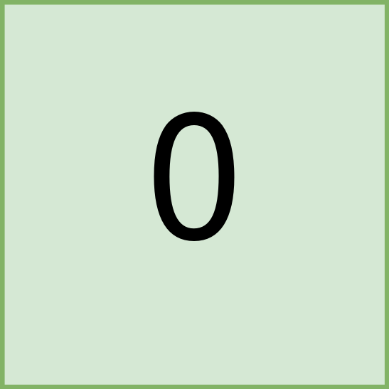

You are given a 0-indexed m x n binary matrix land where a 0 represents a hectare of forested land and a 1 represents a hectare of farmland.
To keep the land organized, there are designated rectangular areas of hectares that consist entirely of farmland. These rectangular areas are called groups. No two groups are adjacent, meaning farmland in one group is not four-directionally adjacent to another farmland in a different group.
land can be represented by a coordinate system where the top left corner of land is (0, 0) and the bottom right corner of land is (m-1, n-1). Find the coordinates of the top left and bottom right corner of each group of farmland. A group of farmland with a top left corner at (r1, c1) and a bottom right corner at (r2, c2) is represented by the 4-length array [r1, c1, r2, c2].
Return a 2D array containing the 4-length arrays described above for each group of farmland in land. If there are no groups of farmland, return an empty array. You may return the answer in any order.
Example 1:

Input: land = [[1,0,0],[0,1,1],[0,1,1]] Output: [[0,0,0,0],[1,1,2,2]] Explanation: The first group has a top left corner at land[0][0] and a bottom right corner at land[0][0]. The second group has a top left corner at land[1][1] and a bottom right corner at land[2][2].
Example 2:

Input: land = [[1,1],[1,1]] Output: [[0,0,1,1]] Explanation: The first group has a top left corner at land[0][0] and a bottom right corner at land[1][1].
Example 3:
Input: land = [[0]] Output: [] Explanation: There are no groups of farmland.
Constraints:
m == land.lengthn == land[i].length1 <= m, n <= 300landconsists of only0's and1's.- Groups of farmland are rectangular in shape.